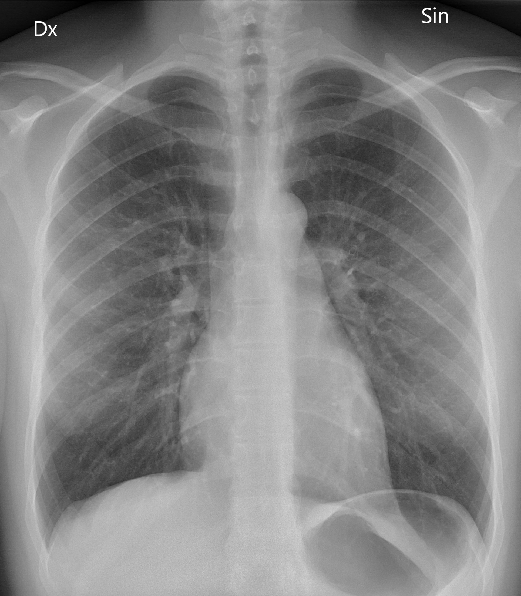

Autonomous research for 2D medical imaging
autoresearchmedimage
A PyTorch adaptation of Karpathy’s autoresearch for classification, multilabel classification, and binary segmentation. Search model backbones and training recipes under a fixed experiment budget, then train selected candidates longer.
Matthew P. Lungren, MD, MPH01 / Workflow
Experiment workflow
A dataset definition specifies images, labels or masks, and fixed train, validation, and test splits. Each experiment trains a recipe for a set time budget and records its validation score. The same training entry point supports all three tasks.

results.tsvValidation scores guide the next recipe.
Multilabel classification uses one binary label per finding and supports mean AUC, macro F1, and micro F1. Recipe template ↗
prepare.py remains fixed during search. Held-out test data is reserved for the final evaluation of saved checkpoints.
02 / Method
Adaptive search and refinement
The optional search helper proposes recipes, records candidate lineage, and confirms borderline improvements. Refinement can retain candidates from different backbone families before promoting them to longer training.
Search space
backbone
learning rate
augmentation
loss / optimizerCandidate lineage
Recipe Retained branch
R ResNet · D DenseNet · E EfficientNet
Follow-up runs
Search: compare seed recipes with short runs under the same time budget.
Schematic of the optional search workflow. Candidate nodes and progress indicators illustrate the process; they are not recorded experiments.
03 / Experiments
ChestXray14 case study
In the documented local experiment series, candidate rankings changed after longer training. The recipe promoted from the short search reached 81.09% mean AUC at 10 epochs; three alternatives reached 84.49–84.80%.
Local candidate comparison
Mean AUC (%) · 10 epochs
| Backbone | Candidate | Mean AUC (%) |
|---|---|---|
| EfficientNet-B0 | Alternate recipe | 84.802390 |
| DenseNet169 | Promoted runner-up | 84.726800 |
| ResNet50 | Promoted runner-up | 84.486692 |
| EfficientNet-B0 | Short-search promoted recipe | 81.088263 |
Values recorded in the local case-study note, March 14–15, 2026. The note does not report independent replication or held-out test results. Source and experiment context ↗
Literature references
Test-set AUROC across the same 14 findings, under each paper’s evaluation protocol.
| Method / evaluation | Mean AUROC (%) |
|---|---|
| Wang et al. Published patient-wise test split | 74.51 |
| CheXNet Patient-disjoint 70/10/20 split | 84.14 |
| DACNet (Strick et al.) Stratified patient-level split | 85.27 |
Wang and CheXNet means are calculated from their 14 per-finding values (Table 17 and Table 2, respectively). DACNet’s mean is reported in Table 3 of the 2026 revision. These are literature references, not reruns on a shared test set; the local candidate runs above do not have an archived held-out test report. Values and sources ↗ · Per-finding results ↗
04 / Code
Getting started
Use the Colab notebook or install locally with Python 3.10+ and uv. Prepare a labeled image folder, or define a dataset manifest with labels, masks, and split assignments.
git clone https://github.com/mattlungrenmd/autoresearch-medimage.git
cd autoresearch-medimage
uv sync --locked
# Detect labels and splits in a local image folder
uv run prepare.py --data /path/to/your/images
# Use the dataset name printed during preparation
uv run train.py --dataset your_datasetgit clone https://github.com/mattlungrenmd/autoresearch-medimage.git
cd autoresearch-medimage
uv sync --locked
# Validate the included tiny fixture
uv run prepare.py --dataset toy_binary
# Run a short experiment without pretrained weights
uv run train.py --recipe toy_binary_smoke --time-budget 5The current release supports 2D images. See the scope and roadmap for limitations. GPU benchmarking and clinical validation require separate evaluation.
⌄_chest_radiograph_(X-ray).jpg){kind=link}

_scan.jpg){kind=link}